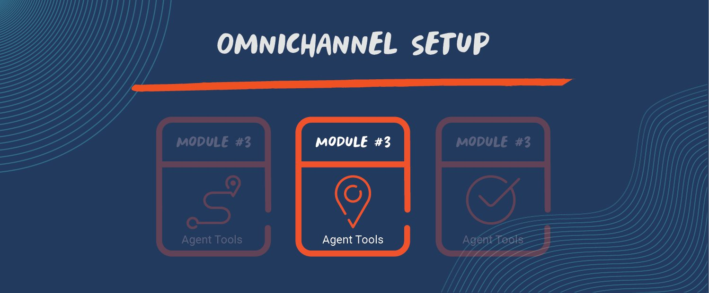
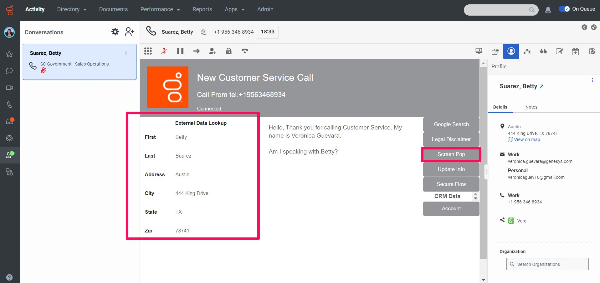
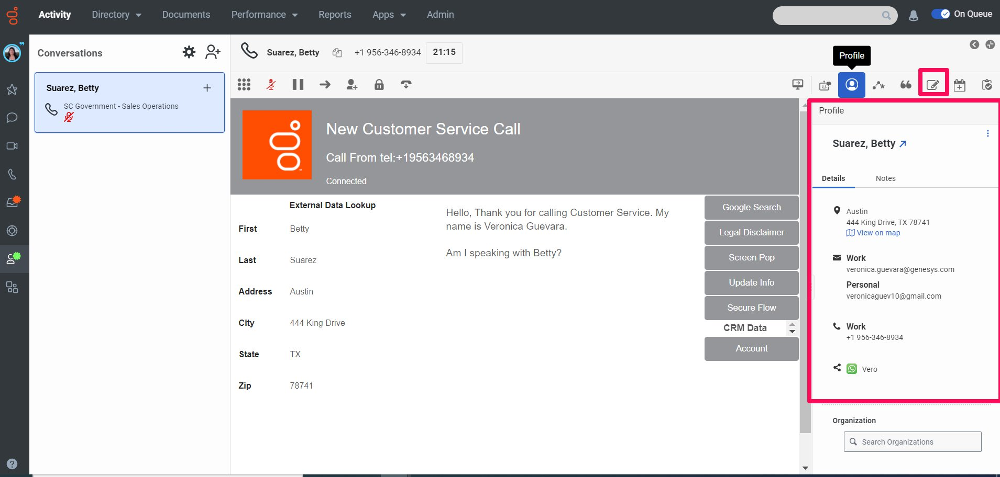
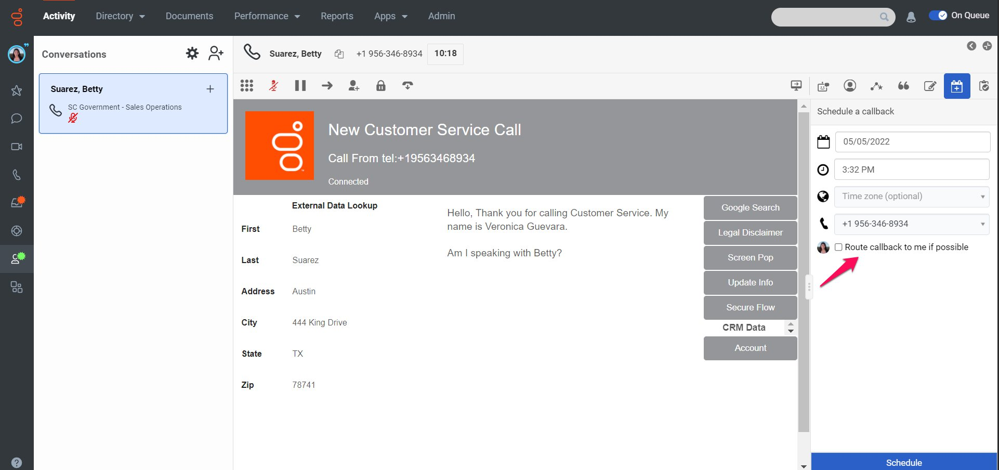
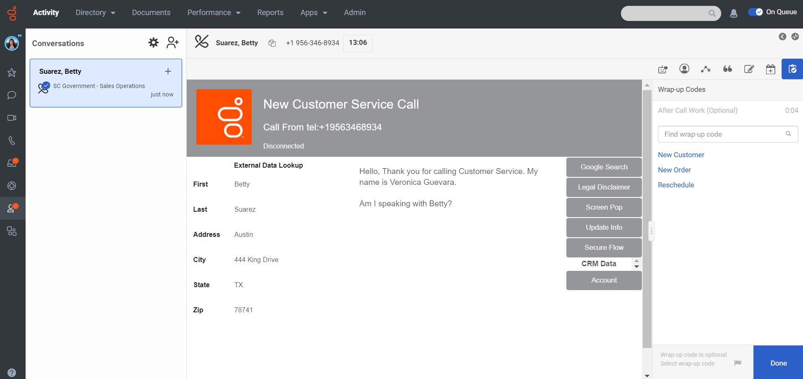

Voice Interactions

Voice Interaction Tools
Hello! You are about to embark on an interaction taking journey for G-Ride as an agent named Veronica. You’ve completed the previous modules and are now ready to start taking inbound interactions. As noted above, please ensure you have answered a voice interaction and it is sitting on your interaction panel as seen in the picture below. Genesys Cloud makes it easy for you to do your job by providing you tools that give you omnichannel visibilty and allow you to take interactions quickly and efficiently. Let’s get started!

Dialpad- The dialpad allows you to enter numbers that automated call systems recognize, such as an account number or a menu selection. For example, Betty the customer is calling in and needs help finding her account number and entering it into the system.
Mute/Unmute- After helping Betty locate her account number, you have to put her on mute to quickly to ask the agent next to you for some help. The mute button allows you to ask your fellow agent a question without Betty hearing.
Pause- Looks like your fellow agent can’t help you find your information so you can hit the “pause” button to put Betty on hold while you quickly call your manager to get her input. The hold button allows Betty to hear some calming music while you get that information quickly.

In this scenario you don’t have to actually transfer Betty, but its helpful to know the different types of transfers and how they work.
Blind Transfer- The blind transfer button allows you to transfer Betty quickly to another queue or agent. You’re able to see an agent’s availability beforehand. This scenario would be helfpul if it is a simple inquiry and the other agent doesn’t need to know any information before the transfer happens.
Consult Transfer-The consult transfer button allows you to check an agent’s availbility beforehand to ensure someone will be available to answer Betty’s trasnfer.You can brief the agent quickly before Betty is transferred to ensure they have the appropriate information and don’t have to waste time or ask duplicate questions.

Start/End Secure Pause- As an agent for G-Ride, you frequently have to take personal and confidential information. You’re able to hit the “secure pause” in order to stop the recording of the call, input the credit card number, and end the “secure pause” to resume the recording. This ensures no confidential information is recorded. You can still hear the customer and speak to them during this secure pause, but the system does not record the interaction at this time. This secure pause can also be embedded in the script, which we will discuss later. Secure pauses can also be triggered through APIs and 3rd parties. https://appfoundry.genesys.com/filter/genesyscloud
Hang-up- When you’re finished helping Betty, you can hit this button to end the call and begin your after-call work.

Script- Scripts are a way for supervisors to give you words and logic to follow when taking interactions. Scripts can contain the exact words you are supposed to say when speaking to a customer, 3rd party websites you frequently have to visit, customer data from a 3rd party system, and more! This is useful for newer agents who may not know what to say when taking a call or even for experienced agents to reference, and it saves time by having the most important tools on the same page. Scripts are completely customizable and configurable by queue and interaction type. Below is an example of what a script can look like!

Legal Disclaimer- In some industries, agents have to say statements verbatim in order to ensure they are following compliance regulations. Agents can pop over to the statement and easily navigate back to the script.

Screen Pop- Betty is actually calling to check up on the her package. The “screen pop” button allows you quickly open Fedex’s page to check the status of her package. External websites can also be embedded in this script depending on the administrator’s preference.

Update Info-Agents can update the customer record. In this example, the system is doing a data dip and populating the CRM customer record. For example, Betty Suarez calls in and tells you she moved to Dallas and doesn’t live in Austin anymore. You can easily update this information and it will update the CRM customer record.

Secure Flow- Similar to the “secure pause” from previously, you can process confidential personal information such as social security numbers, credit card numbers, etc. The “secure flow” button differs from a secure pause in that the “secure flow” button is setup so that an agent is not able to take any confidential information unless this button has been selected. This button automatically stops/resumes the recording accordingly. Embedding this button in the script allows administrators to remove the “human error” possibility and ensure a call is recorded at the appropriate times. This allows you as an agent to focus on providing an exceptional customer experience instead of worrying about remembering to resume the recording

CRM Data- To give a personalized customer experience, it is useful to see Betty’s information. Scripts allow administrators to present data from external systems such as CRMs. In this case, the system is doing a data dip into the 3rd party CRM to present relevant information to you. You are able to see her full name, her city, and more relevant account information. As noted above, it is a bi-directional integration so you can update information and send it back to the CRM.

Account-Agents are given more insight into a customer’s account and service
Screen Share- A screen share allows you to see the customer’s screen in real-time, with their permission of course. Agents have to request and receive permimssion from a customer to initiate a screen chat. For voice, you can verbally communicate the security key to Betty, who will then type that number into a form on your website. For web chat, Genesys Cloud shares the security key behind the scenes, with no action needed you. A screen share is always linked to the original interaction, in this case a voice interaction. For quality management purposes, this interaction will show as one singular interaction.

Agent Assist-Agent Assist provides real-time transcription of a customer call and knowledge suggestions that update automatically based on the context of the conversation. Knowledge suggestions include FAQ or knowledge article recommendations that make agents more efficient and knowledgable. You don’t have to waste time searching for information and can focus on your discussons with customers. In this example, Betty stated she wanted to change her address. Agent assist suggested a relevant article with a 97% confident rating and you can give feedback on whether this article was helpful or not.

Profile- The customer profiles gives more information about the customer. You can see more customer details and notes that other agents have made about this customer. Its always best to have as much information as possible about the customer to ensure you’re delivering a personalized experience. For example, if previous agents have left notes about Betty frequently losing her account number, you can offer to text or email the account number so she has a copy of it.
Notes- As mentioned previously, notes offer a way to add personalized tidbits about a customer. For example, if Betty always mentions her pet cat, Igor, everytime she calls, you can leave a note so the next agent remembers to ask her how Igor is doing. Though this seems like a small detail, it will go a long way towards making Betty feel valued as an individual customer.

Schedule a Callback- If you are not able to assist Betty at this moment, you can schedule a callback. You can allow Betty to select a time and date that works best for her. If you are available it will route the callback to you or it will go back to the original queue. Allowing Betty the freedom to select the callback ensures you are contacting their customer at the right time.

Wrap-up Codes-Once the call has been concluded and Betty has left as a very satisfied customer, the after-call work begins. Part of your after-call work is designating a wrap-up code to give insight into the purpose of the call. For example, since Betty was calling to reschedule her appointment, you would select the “reschedule” wrap-up code. These codes give supervisors insight into calls for reporting purposes.
